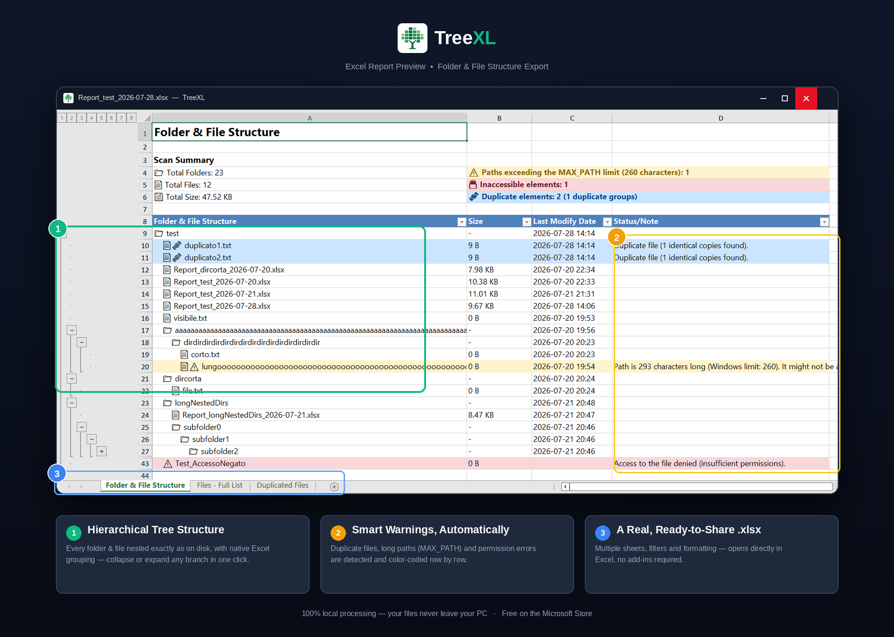

PowerShell: Export a Folder Structure to Excel
Learn how to recursively list Windows folders and files with PowerShell, export the results to CSV for Excel, and build a more useful folder inventory. If you do not want to maintain scripts, TreeXL provides a graphical alternative.
Try TreeXL Free →From Folder Structure to a Ready-to-Use Excel Report
PowerShell can enumerate files and folders, but turning the results into a structured, presentation-ready Excel report requires additional work. TreeXL automates that step.

Quick Answer: Export a Folder to Excel with PowerShell
The simplest built-in PowerShell approach is to recursively retrieve the contents of a folder and export the results to CSV.
Open the resulting folder-structure.csv file with Microsoft Excel.
How PowerShell Folder Export Works
PowerShell is particularly useful for this task because it can traverse directories recursively and return structured objects rather than just plain text.
The main command used for directory enumeration is:
The -Recurse parameter tells PowerShell to process child directories as well.
This can return both folders and files below the selected directory.
List All Files in a Folder and Its Subfolders
If you are interested only in files, use the -File parameter:
This is useful when you need a flat inventory of all files below a directory.
For example, you could use it to investigate a project directory containing many nested folders.
List All Folders and Subfolders with PowerShell
To retrieve directories rather than files, use the -Directory parameter:
This produces a recursive list of directories below the selected location.
Export Useful File Properties
One advantage of PowerShell is that you can choose which properties should be included in the exported data.
For example:
The resulting CSV can contain information such as:
- Full file path
- File name
- File extension
- File size
- Last modified date
Export PowerShell Results to CSV for Excel
CSV is one of the easiest ways to move PowerShell data into Excel.
After running the command, open folder-list.csv in Excel.
From there you can sort, filter and format the information according to your needs.
Can PowerShell Create a Real XLSX File?
Yes, but creating a native XLSX workbook is different from exporting a CSV file.
PowerShell itself provides straightforward commands such as Export-Csv, but producing a fully formatted Excel workbook generally requires an additional approach, such as Excel automation or an external PowerShell module.
This becomes relevant when you want a report that is more than a simple list of paths.
CSV
Simple, portable and easy to generate directly from PowerShell.
XLSX
Better suited to formatted, presentation-ready Excel reports.
Create a More Readable Folder Hierarchy
A recursive PowerShell export often produces a flat list of paths.
For example:
This is technically useful, but it is not necessarily the most readable representation of a folder tree.
Creating a report that visually communicates the hierarchy requires additional processing and formatting.
Limitations of a PowerShell Folder Export Script
PowerShell is powerful, flexible and excellent for automation. However, a simple recursive command does not automatically solve every problem encountered in a real-world file system.
Script Maintenance
Custom scripts need to be created, tested, maintained and adapted when requirements change.
Excel Formatting
Producing a polished XLSX report requires more work than producing a CSV.
Permissions
Some directories may not be accessible to the current user.
Long Paths
Very long Windows paths can require additional consideration during file-system scans.
Error Handling
A production-quality script may need to account for errors encountered during recursive scanning.
Repeated Work
Running the same multi-step process repeatedly can become inconvenient when the task is frequent.
What Happens When PowerShell Encounters Access Denied?
A recursive directory scan can encounter folders that the current Windows account cannot read.
Depending on the command and error-handling configuration, these situations can produce errors or incomplete results.
When creating an inventory for migration or auditing, knowing that a directory could not be read can be just as important as knowing what was successfully scanned.
PowerShell and Long Windows Paths
Deeply nested directories can produce paths that are very long.
This can become relevant during migrations, backups, synchronization and file-management operations.
If your goal is simply to identify these paths and include them in a structured report, a dedicated folder inventory tool can make the workflow easier.
A No-Script Alternative to PowerShell
PowerShell is an excellent solution when you need customization or automation.
But if the goal is simply:
you may not need to write a script at all.
TreeXL is a Windows application designed specifically for this workflow.
No PowerShell Script
Generate the report without creating or maintaining a custom script.
File Explorer Integration
Start TreeXL from the Windows folder context menu.
XLSX Report
Create a structured Excel workbook rather than stopping at raw command output.
Real-World Folders
The application is designed to deal with situations such as long paths, duplicate files and inaccessible items.
PowerShell vs TreeXL
| Feature | PowerShell | TreeXL |
|---|---|---|
| Recursive scanning | Yes | Yes |
| Requires scripting | Usually | No |
| CSV output | Yes | Not the primary output |
| Native XLSX report | Additional work | Yes |
| Custom automation | Excellent | Limited |
| File Explorer workflow | Manual | Yes |
| Best suited for | Automation and custom workflows | Fast Excel reports |
When Should You Use PowerShell?
PowerShell is probably the better choice when you need programmatic control over the process.
- You need to automate the export on a schedule.
- You need custom filtering logic.
- You need to integrate the results with another administrative workflow.
- You are comfortable writing and maintaining scripts.
- You need complete control over which properties are exported.
When Is TreeXL More Convenient?
TreeXL is intended for situations where the desired result is a useful Excel report rather than a programmable directory-processing workflow.
- You want to export a folder without writing code.
- You want to start the process from File Explorer.
- You need a formatted XLSX report.
- You regularly perform manual folder documentation.
- You want to make the process accessible to less technical users.
Common PowerShell Folder Export Use Cases
IT Administration
Inventory shared folders, servers and directory structures.
Data Migration
Analyze a directory before moving data to another server or storage platform.
File Auditing
Generate a structured list of files and folders for review.
Cleanup Projects
Produce a file inventory before reorganizing or archiving data.
Documentation
Capture the organization of a project or technical environment.
Automation
Integrate directory exports into larger administrative scripts.
Related Windows Folder Export Guides
Export Folder Structure to Excel
A broader guide covering manual methods, Command Prompt, PowerShell and TreeXL.
Read the guide →Windows Folder Tree Generator
Learn more about generating a structured folder tree from a Windows directory.
Open guide →PowerShell Folder Export FAQ
How do I export a folder structure using PowerShell?
Use Get-ChildItem with the -Recurse parameter to recursively enumerate the directory. The results can then be selected and exported to CSV or processed into an Excel workbook.
How do I export a folder structure to Excel with PowerShell?
A simple approach is to use Get-ChildItem -Recurse and pipe the results to Export-Csv. The resulting CSV can be opened in Excel. Creating a native XLSX workbook generally requires additional processing.
How do I list all files in a folder and subfolders?
Use: Get-ChildItem "C:\YourFolder" -Recurse -File
How do I list only folders and subfolders?
Use the -Directory parameter together with -Recurse: Get-ChildItem "C:\YourFolder" -Recurse -Directory
How do I export a PowerShell file list to CSV?
Pipe Get-ChildItem into Export-Csv: Get-ChildItem "C:\YourFolder" -Recurse | Export-Csv "folder-list.csv" -NoTypeInformation
Can PowerShell create XLSX files?
Yes, but native XLSX generation generally requires Excel automation or an additional module or library. Export-Csv is available directly for CSV output.
What is the difference between CSV and XLSX?
CSV is a text-based tabular format. XLSX is the native Excel workbook format and supports richer formatting and spreadsheet features.
Is there a PowerShell alternative that does not require scripting?
Yes. TreeXL provides a graphical Windows workflow for exporting folder structures to Excel without requiring users to write or maintain a PowerShell script.
Is TreeXL a replacement for PowerShell?
Not generally. PowerShell is better suited to custom automation and programmable workflows. TreeXL focuses on quickly generating structured Excel reports from Windows folders.
Need the Excel Report Without Writing a PowerShell Script?
PowerShell gives you complete control, but not every folder export needs a custom script.
With TreeXL, you can select a Windows folder, start the export from File Explorer and generate an Excel report.
Download TreeXL Free →